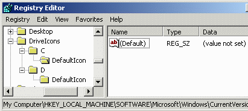
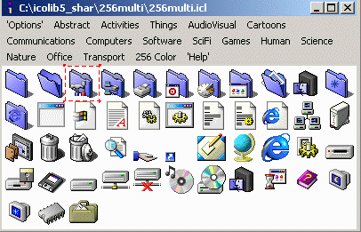
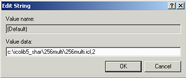
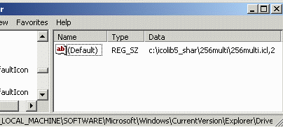
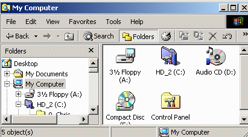

Changing Desktop Icons
Top
Drives
Folders
Files
Shortcuts
System
Drives
- It is possible to change the icon for the hard disk drives on a
Windows 95 and Windows 98 system by creating a file called
c:\autorun.inf and putting the following two lines into this
file.
[AUTORUN]
ICON=c:\ICONS\SAMPLE_ICON.ICO
- You should create a folder called C:\ICONS to store the
icon you will use. I have assumed in this example that the icon has
been called SAMPLE_ICON.ICO
- I have not managed to make this work under Windows 2000 or
Windows ME. I have not yet tried to make it work under Windows XP.
Another method...
- There is an alternate method which does work with Win98/2K/ME
but not with XP. You will need to edit your Windows Registry with
this method. Always back up your registry before making any changes
to it.
- In the registry, you can apply different icons to seperate floppy
drives, CDROM drives and hard drives with some simple registry keys
(Win 98 or above is needed). To do so create/edit this registry key...
HKEY_LOCAL_MACHINE\Software\Microsoft\Windows\
CurrentVersion\explorer\DriveIcons
- Under this key, create/edit news keys with only the drive letter
as their name. For example...
HKEY_LOCAL_MACHINE\Software\Microsoft\Windows\
CurrentVersion\explorer\DriveIcons\C
- Under each drive letter key, create another key called "DefaultIcon".
HKEY_LOCAL_MACHINE\Software\Microsoft\Windows\
CurrentVersion\explorer\DriveIcons\C\DefaultIcon

- Decide which icon you want to use. For this example I chose the third
icon in the 256 color collection that comes with the shareware version of
Icon Library.

- Double click on the word Default in the right part of the
window and change the string (value not set) to point to the full
path of your icon. Add a comma and number when the icon is in an .icl file.
The first icon is 0.

- Click the OK button and you should now see the path set as
the default value for the drive.

Note that if there's an autorun.inf present in the root path of the
drive, any icon specified there may be displayed instead.
- You will have to reboot Windows for the new icon to be visible. Once
you have rebooted, you should see the new disk drive icon as shown for the
HD_2 drive in this example.

- DefaultIcon settings do not seem to work with Windows XP.
- Floppy disks, ZIP disks and other removable media can also have their own
icons added using this method.
- DISCLAIMER: I am not responsible for any system crash you have
after you edit your registry. BACK IT UP FIRST.
- You can now try changing the icons for some of your
Folders.